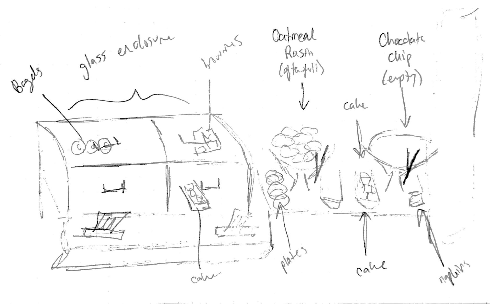
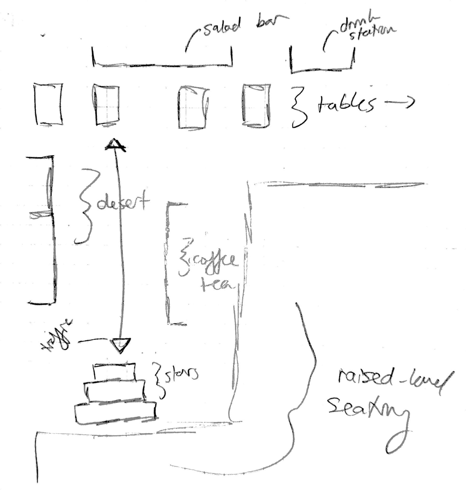

|
September 26 2016, 7:35PM This report analyzes the activity of choosing a dessert item from the bakery section of the Stetson East dining hall, Levine Marketplace. This activity was chosen because the bakery is often crowded, causing congestion on one of the primary paths to a rather large seating area. Also, unlike the majority of other stations in the dining hall, the bakery is self-service. Thus, by focusing on this activity I intended to discover the cause of this congestion. More specifically, I hoped that by analyzing the established system we may consider how a more efficient system might be designed, should efficiency truly be the issue at hand. |
Process OverviewChoosing a dessert item has three main steps, when all goes to plan. These are: (1) know what item you want, (2) pick up a plate or a napkin to place it on, (3) retrieve and place the item on the carrier. If these were all that was required, each customer's interaction with the bakery would take only around five seconds to complete. However, there are many complications that can get in the way of this process. Step one is often not pre-planned by the customer, thus a decision step must be considered. This decision sets the customer down one of many paths, as detailed later in this report. In addition to this decision, numerous other factors such as item stock, number of customers, location of item, number of items desired, distraction items and even temperature of item will affect the length of transaction. |
Layout of the BakeryAs sketched above, the bakery has two sections. On the left is a clear enclosed area, with handles on doors to get at the items inside. In front of the clear enclosure there are two tissue-box style napkin dispensers and a ledge. The enclosure has four sections, in which there were bagels, brownies, and two types of cakes. The right side was a counter, with two platters of cookies on either side and a tray of cakes in between. On each platter was a pair of tongs, to the left was a stack of plates and the to right a stack of napkins.  This station is opposite a beverage (coffee and tea) station, in a small hall way that lets out of the main food area leading up a few steps into a seating area. |
Population & Artifacts ObservedAll of the people that were observed interacting with the bakery were either students or employees, as the dining hall is a closed off area that requires the use of a meal-swipe to enter. All customers observed were also not visibily physically handicapped. Between these two groups, a pattern was noticed where students would more often than not serve themselves, whereas employees would make small-talk with the employee behind the station who was preparing and putting out the deserts, who would in turn serve them. This was an interesting exception to the self-service rule; there was some crossover between these two groups.The students were best classified by the artifacts that they used / were using while interacting with the bakery. The artifacts/utensils provided by the system were doors/handles, napkins, plates and tongs. Napkins were initially only in front of the clear enclosure on the left, inside tissue-box like enclosures. At a point during my observation, a stack of napkins was put out on the right side of the display with the cookies, opposite the stack of plates to the left of them. The handles were located on the vertical-opening doors to the clear enclosed left-side of the bakery. Distraction items had a huge effect on the interaction: these included trays of dirty dishes, cell phones, other food items and bags. |
Interviews and LearningsThe first student that I interviewed was a freshman who I approached while he was waiting alone in-front of the bakery. After talking to him, I learned that he was used to having to wait. This was because he wanted the chocolate chip cookies which constantly run out, something I noted in my observations. The oatmeal raisin platter (left) was nearly entirely filled during my entire hour of observation, however the chocolate chip cookies (right) were constantly running out. He wasn't too upset by this wait though, as he said it was never too long and it meant that he'd get fresh cookies. He had already finished his meal and planned to get a glass of milk to eat the fresh cookies with. When asked what he would like to see improved about this process, he offered up suggestions such as a signal for when cookies are ready that he could see from afar. He also offered up the idea of a heat lamp or heated tray to keep cookies warm, as that was a reason that he didn't take the oatmeal raisin ones- they were unpopular thus they sat there for a while. I took ideas such as these into account when considering how technology could benefit this system. This interview also taught me that there were more measures to consider in this system than efficiency, specifically in this case: quality.The second student that I interviewed was in a much greater rush, so I didn't get as much detail from her. She was dressed in gym clothes, and seemed to be an older student. I talked to her after she picked up a piece of cake from the right side of the counter. In response to me asking why she waited in the crowd of people surrounding the cookies to get a piece of cake rather than take it from the clear enclosure, she said that she had assumed it was fresher. She then admitted that she hadn't thought too deeply about it beyond that, as she was in a rush. Finally, a question was offered up by her before she left, which was a wonder as to why the same item would be in two places- one protected by clear plastic and the other not. This interview made me consider the consistency of the system, and the true justification for the clear enclosure. |
Detailed Description of ProcessIn review, the main steps to the activity were:
|